Cadi
App creation for sales reps
Overview
Cadi changes how sales reps (SRs) work in the field. As lead designer, my goal was to pull the team away from paperwork and back to what they do best: growing the business. The mission was simple:
The brand creation
The name comes directly from the word "caddie," the essential assistant who helps a golfer on the course. That is exactly the role Cadi plays for our reps: a proactive, personal assistant in the field. I designed the brand around the idea of a helpful tool that becomes a daily necessity.
The brief was clear: a serious tool with a playful vibe. The logo is a combined location pin and a stylized "C." The pin symbolizes precision, the right information at the right moment in the right place, and the black tip marks the point of action. The teal body keeps it fresh and approachable, distinct from dull corporate software.
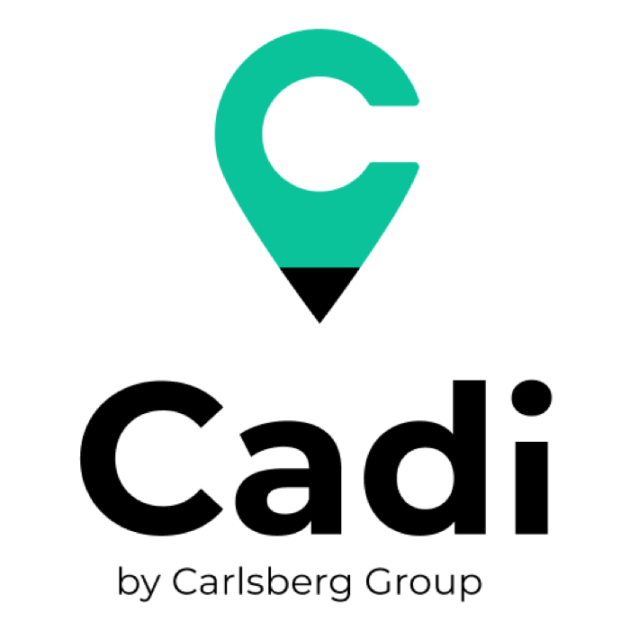
The design process
To make sure the tool was actually useful in the real world, I designed the workflow around four key areas:
- Product: instant access to the full catalog of what customers need.
- Price: the best, most up-to-date pricing, always.
- Place: the tool works anywhere, even without an internet connection.
- Promotion: a dedicated space for current and upcoming deals.
Business objectives
- Cut down on manual data entry so reps can spend more time with customers.
- Give reps the tools to find new prospects and expand their reach.
- Design easy-to-read dashboards that reduce churn and improve sales "fit scores."
We built Cadi as a Progressive Web App (PWA). It works on any device, stays fast offline, and syncs instantly the moment a rep is back online. That choice let us ship in half the time the market expected.
1. Empathize
- Stakeholders talk
- Target audience
- Competitive analysis
- Empathy map
2. Define
- Problem statement
- Problem solution
- Personas
- Hypothesis
3. Ideate
- Brainstorm
- Wireframes
- Customer journey
- Site map
4. Prototype
- Visual design
- Style guide
- Interactions
- Prototypes
5. Test
- A/B test
- Interviews
- Surveys
- Usability
6. Expand
- Market lookup
- Stakeholder interview
The challenges
Customer face-time
Reps have full schedules, so the platform had to be fast and intuitive enough to never steal time from their customers.
Calendar sync
Reps live in Microsoft Outlook, so Cadi needed to sync directly rather than scatter information across tools.
Map visualization
Finding customers by address isn't intuitive, so a visual territory map was essential.
Customer check-ins
A clear way to see which customers were visited and which were still on the list.
Offline ordering
The platform had to work as an ordering tool at all times, even with no connection.
Notes and reminders per customer
A reliable place to capture preferences and follow-ups, so nothing is lost between visits.
Target audience
Since Cadi is an internal tool for the Carlsberg Group, our users were easy to identify. We focused on bridging the gap between two very different profiles: the tech-savvy user and the traditional user. We built six personas in total; these two anchor our "On-Trade" and "Off-Trade" salesforce.
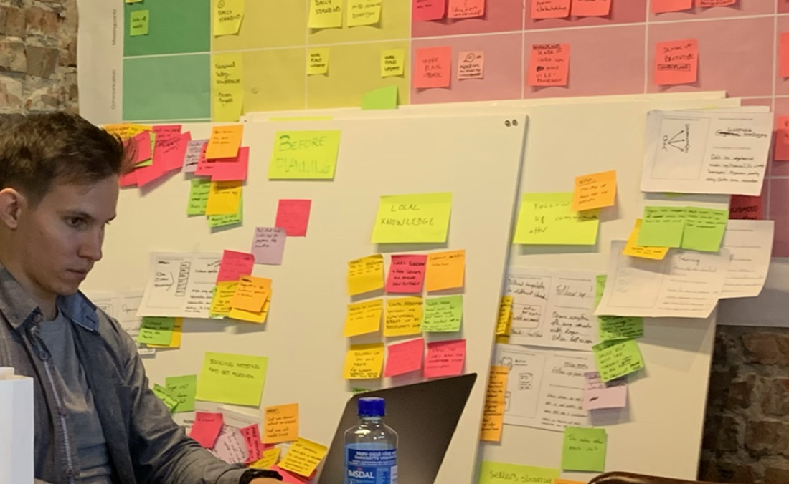
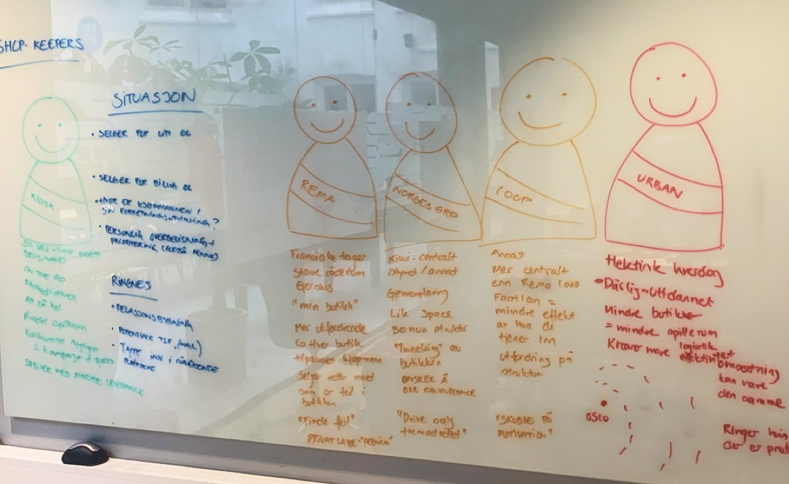
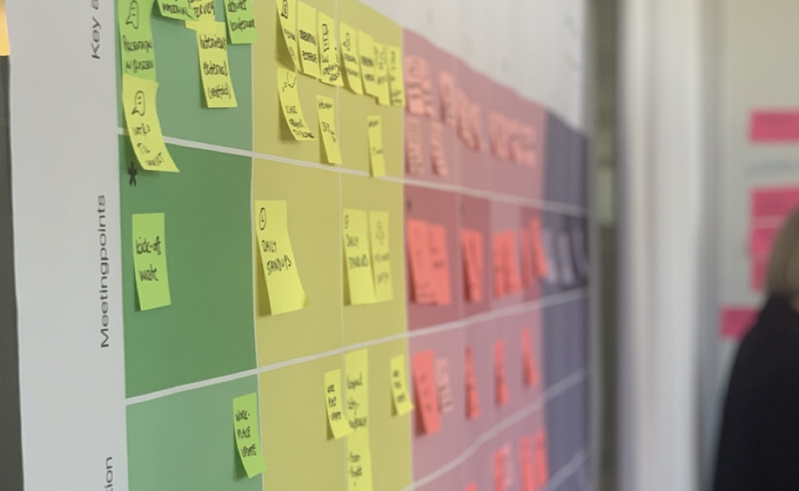
Laura Thompson
Objectives
- Hit monthly sales targets and, if able, go further.
- Acquire at least two new prospects per month.
- Finish her day by 4:00 PM to enjoy some family time.
Pain points
- Many of the bars and cellars she visits have no internet access.
- She wastes time getting lost looking for specific customer locations.
- She still prefers pen and paper; she finds complex software frustrating.
John Lecroy
Objectives
- Win the monthly best-seller award.
- Acquire four prospects per month.
- Reduce his overtime hours.
Pain points
- He feels he has to use too many different apps to do one job.
- He struggles to find a clear, simple way to see where potential new customers are located.
User journeys
To understand how to build the best tool, I interviewed and shadowed reps during their actual workdays, watching how they managed tasks with other apps or just pen and paper.
The goal was a structured flow flexible enough for multiple markets and different types of reps. I mapped specific journeys to cover every scenario: check the agenda, navigate to a customer, document the visit, with variations to keep each path smooth.
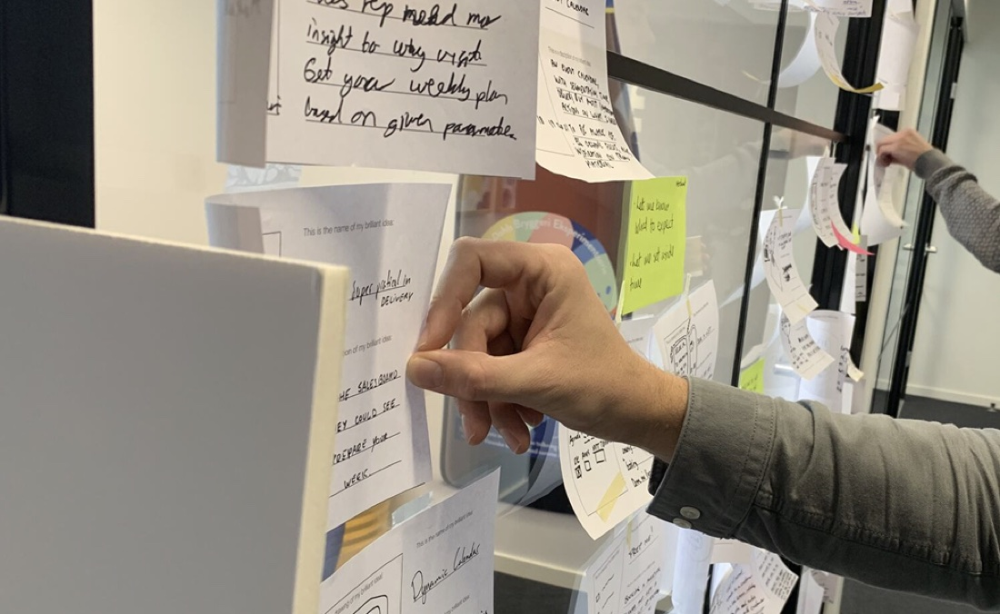
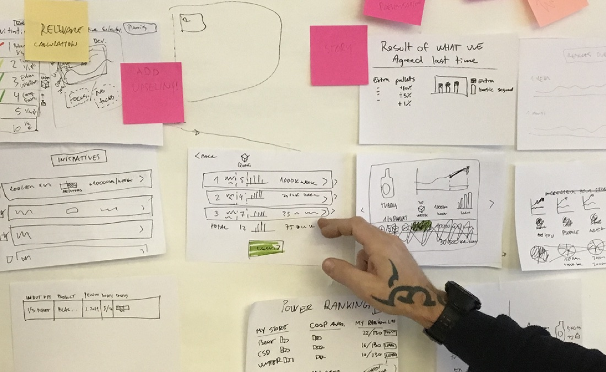
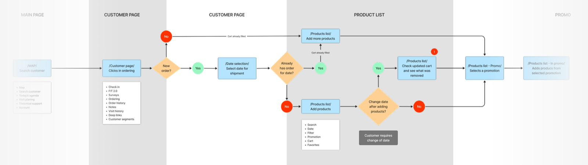
Flow charts and wireframes
Once we understood the journeys, it was time to build the app's skeleton. We started from the must-have pages reps called essential, Map, Agenda, and Order Entry, and the site map grew into a full system from there. The focus was clear navigation, any tool within one or two taps.
I kept the wireframes low-fidelity so the team could focus on logic, layout, and usability without getting distracted by color. The goal was to prove the structure worked for both the tech-savvy and the old-school personas before any brand went in.
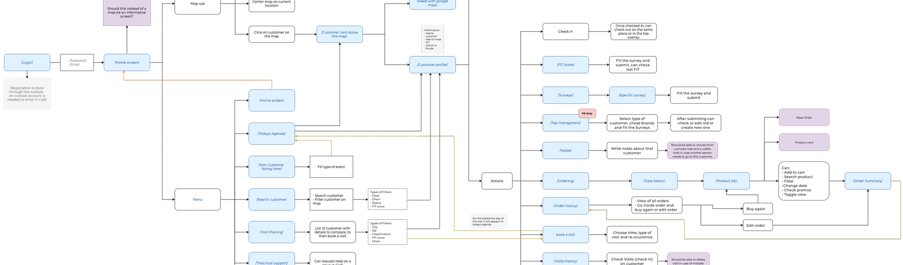
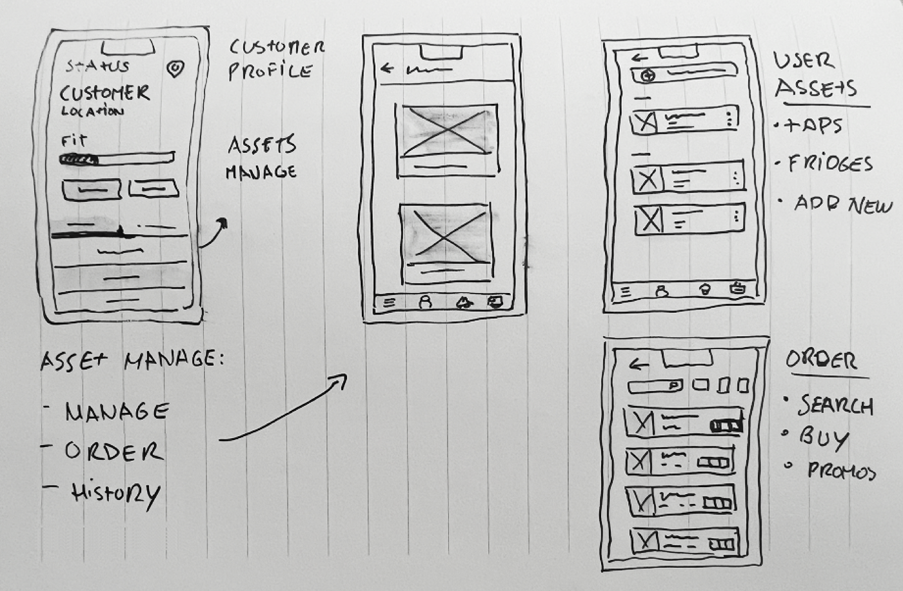
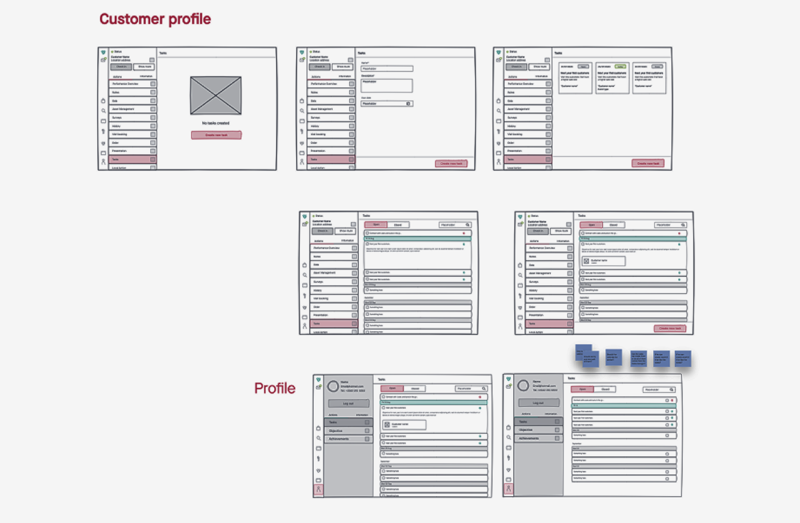
UI elements
With the structure set, we moved into final UI. We were building a design system at the same time, so the platform stayed consistent as it grew. Cadi brand colors, custom icons, and illustrations made the tool feel modern and professional while staying simple enough to use without training.
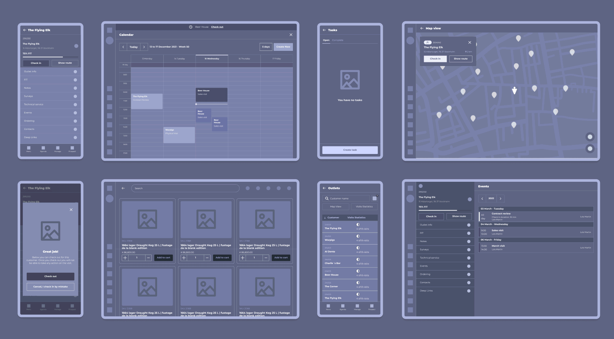
Optimizing the platform
Once live across markets, I returned to the analytics and ran fresh interviews. Some features saw less use than expected, and the agenda wasn't being used as intended.
Reps wanted an agenda that felt familiar, like the Outlook calendar they use every day. Our first daily view was too simple for such a broad audience, so we reworked it. Feedback from reps reached me and the product manager through sales managers, and we designed each fix without breaking the existing system.
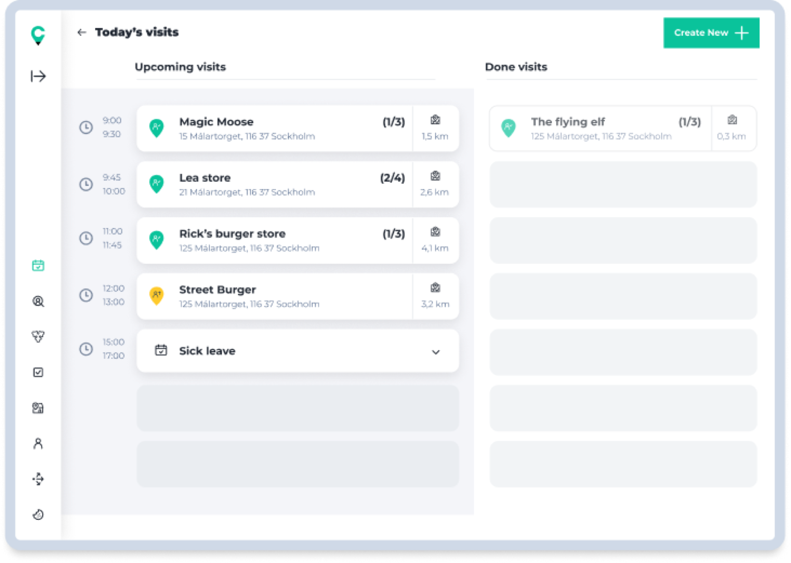
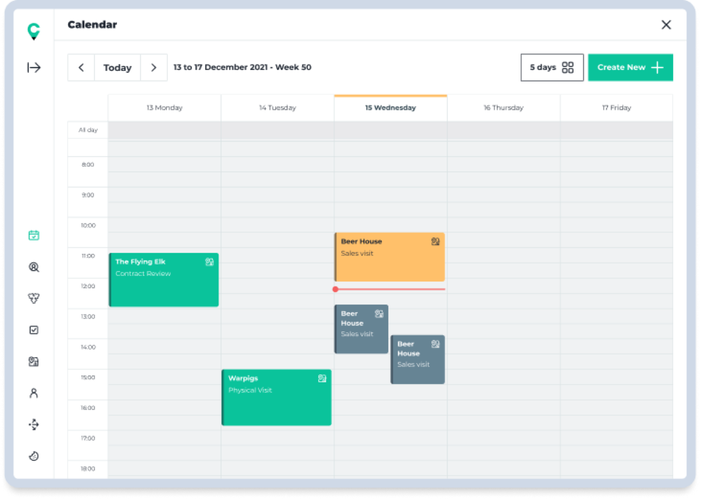
